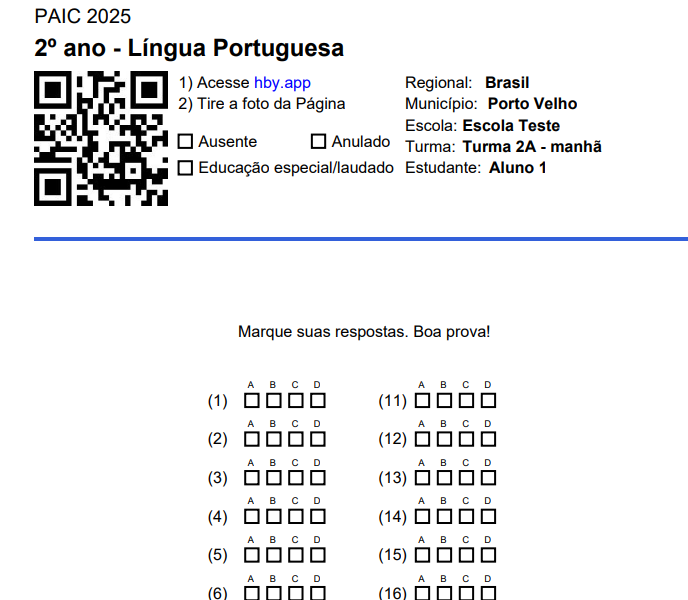
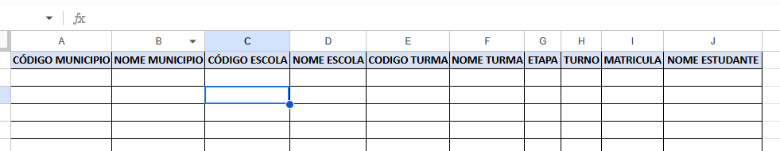
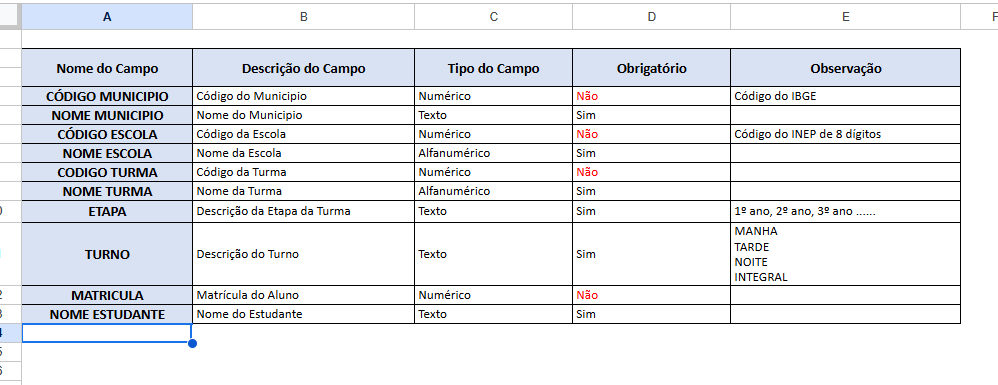
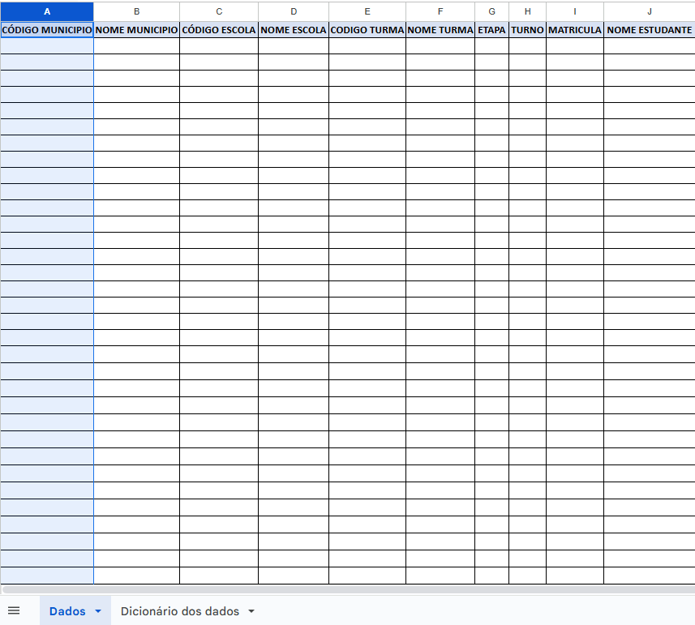
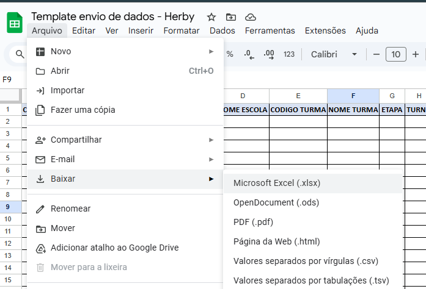

Preenchimento e envio do template com os dados de matrícula da rede.
O template precisa ser preenchido corretamente, para que seja possível constituir os cartões de respostas para a avaliação.

Todas as colunas do template devem ser mantidas, conforme o exemplo em destaque. Os campos que não tiverem dados para preenchimento, devem ser deixados em branco.

Em caso de dúvida, consulte o Dicionário dos Dados, onde será possível identificar qual é a informação que está sendo solicitada e os dados que são ou não obrigatórios para preenchimento.

O Dicionário dos Dados está disponível na segunda aba do template.

Para o download do template, disponibilizamos um link público para acesso:
Antes de iniciar o preenchimento do template, faça o download do arquivo. Não é recomendado o preenchimento com o arquivo ainda na nuvem (Drive).

Após concluir o preenchimento da planilha, com todos os dados solicitados e indispensáveis, envie para o nosso endereço oficial de e-mail:
{{template_de_dados.contato_operacoes}}